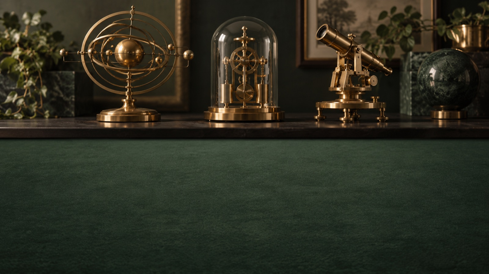
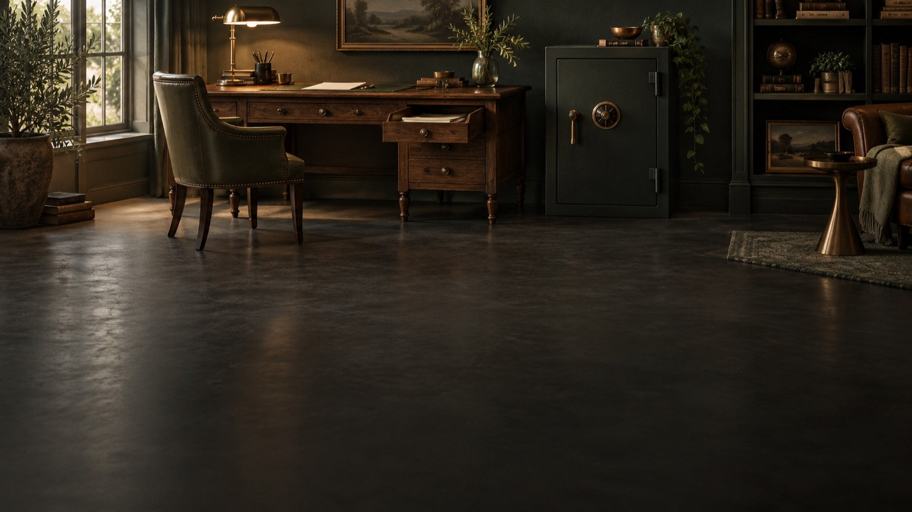
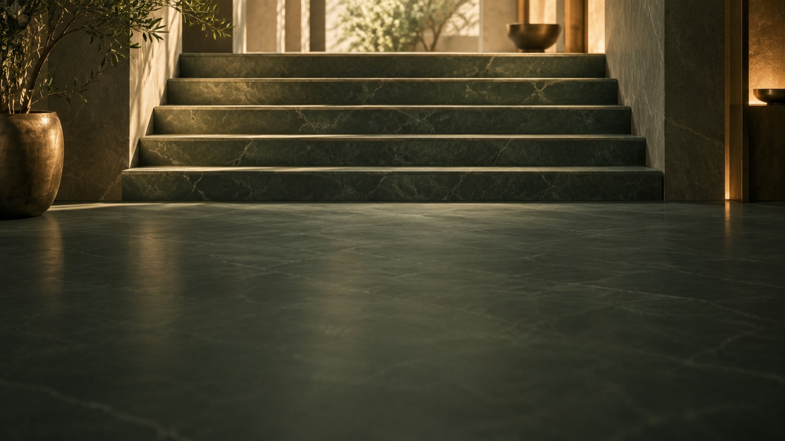
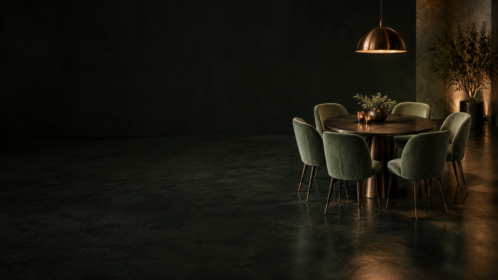
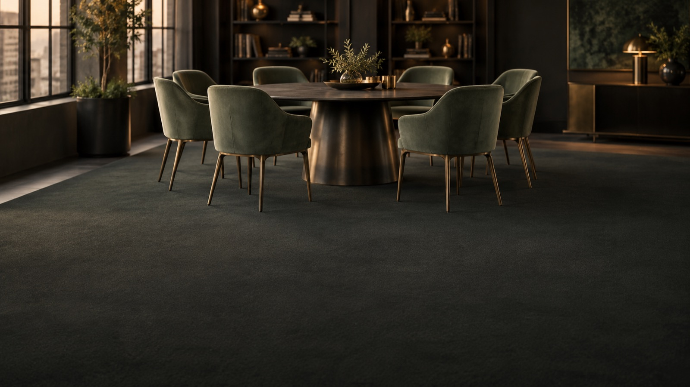
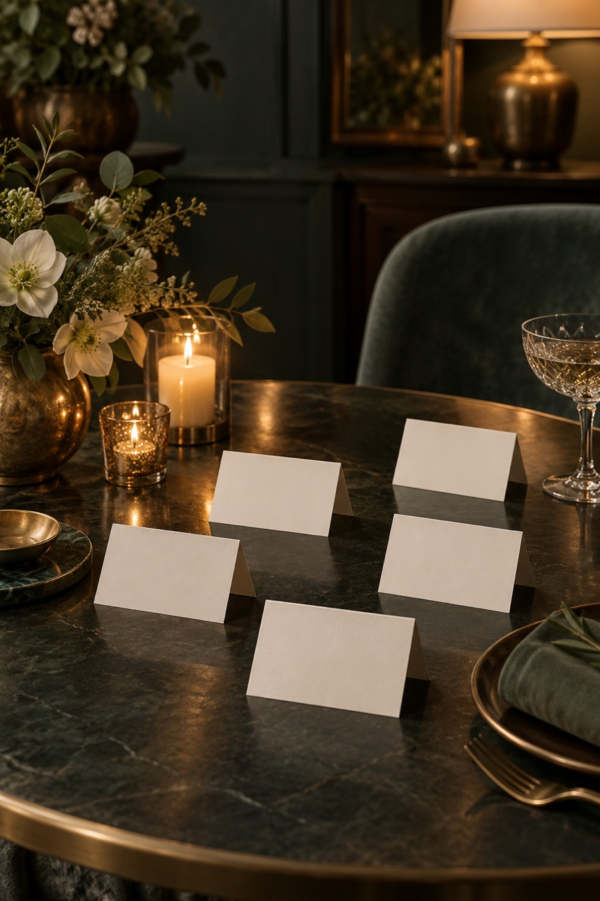
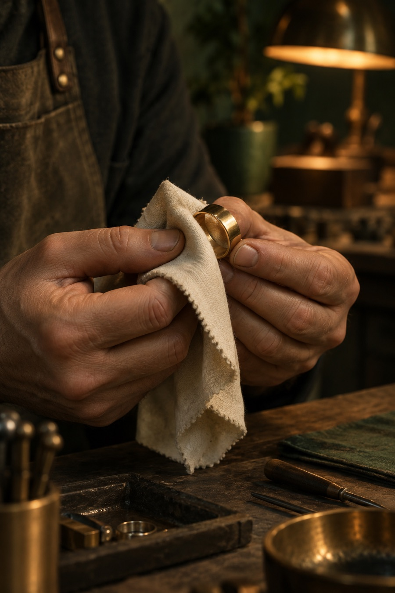

Мастер-класс для «Школы благородных леди» · 14 октября 2026
ИИ. Новая
реальность
Твой новый конкурент или союзник?
Всё зависит от тебя. Сегодня отвечаем
на этот вопрос руками.
Твой новый конкурент или союзник?
Всё зависит от тебя. Сегодня отвечаем
на этот вопрос руками.
Кто в зале, что съедает время, какие задачи вы принесли.
Три мира нейросетей. Почему ответ зависит от того, как вы спросили.
ChatGPT узнаёт вас, ваше дело и ваши цели. И сам говорит, чем полезен.
Формула и двенадцать приёмов. Практика после каждого, а не в конце.
50 промптов под задачи из ваших анкет. Остаются у вас в шпаргалке.
Приложение или chatgpt.com, вход через Google. Не открылся: DeepSeek, работает так же.
Наведите камеру на QR. Все промпты копируются одним касанием, печатать ничего не нужно.
Разобрали приём и тут же делаем на своей задаче. Несколько минут по таймеру.
Проходит через весь мастер-класс. Уходите с готовым результатом, а не с конспектом.
7 анкет.
Прочитали каждую.
заполнили до встречи
собственницы, партнёры, эксперты, блогеры и те, кто запускается
сами, регулярно или как получается
все уже пробовали
«Со знаниями по Ии»
«Научиться работать с помощником который помогает экономить время»
«Уйти с помощником, который экономит время»
«Создать своего ассистента»
Три мира нейросетей: Запад, Китай, Россия.
Чем отличаются и с чем работаем сегодня.
Самые сильные. Из России нужен VPN, подписка оплачивается зарубежной картой.
Догнали Запад за полтора года. Бесплатно и без VPN.
Отстают на шаг, зато без VPN и с оплатой российской картой.
| Запад | Китай | Россия | |
|---|---|---|---|
| Сила на сложных задачах | Самые сильные | Догнали за полтора года | На шаг позади |
| Доступ из России | Нужен VPN | Без VPN | Без VPN |
| Цена | Бесплатно с лимитами, подписка зарубежной картой | Бесплатно | Бесплатно, расширенное по подписке |
| Русский язык и наши реалии | Хорошо | Хорошо | Лучше всех знают реалии РФ |
Форму чата выбрали не случайно: переписка знакома всем. Слева история, снизу строка ввода, файлы и микрофон.

Основной инструмент мастер-класса. Сильный, с персонализацией, памятью, голосом и картинками. Бесплатного тарифа хватает.
Бесплатно и без VPN. Любой промпт из шпаргалки вставляется туда без изменений.
Российские, без VPN, с оплатой нашей картой. Формула и приёмы работают и там.
Хватает на мастер-класс. Упрётесь в лимит: ChatGPT перейдёт на облегчённую модель, или открывайте DeepSeek. Plus снимает лимиты.
Из России chatgpt.com открывается через VPN. Приложение для iPhone и Android: инструкции в шпаргалке.
Прикрепить файл или фото, микрофон, новый чат. В настройках персонализация и память.
Откроем чёрный ящик: откуда он всё знает,
почему говорит по-человечески и почему иногда уверенно ошибается.
Самое широкое. Сюда попадает всё: автопилот, распознавание лиц в телефоне, рекомендации в ленте.
Способ устройства. Улучшает фото, подбирает ленту, узнаёт лицо. Говорить не умеет.
Нейросеть, обученная на языке: ChatGPT, DeepSeek, Алиса, GigaChat. Понимает текст и отвечает текстом.
От слова «генерировать», то есть создавать. Он не ищет готовый ответ, как поисковик, а пишет новый текст под ваш вопрос, слово за словом. Поэтому на один и тот же вопрос дважды ответит немного по-разному.
Заранее обученный. До того как вы с ним заговорили, его долго учили на огромном объёме текстов: книги, статьи, сайты, форумы. Чего в обучении не было, например вашего прайса или вчерашней акции конкурентки, он не знает, пока вы ему это не дадите.
Так называется устройство внутри модели. Читая текст, она смотрит на все слова сразу и понимает, какие из них связаны. В фразе «клиентка забрала платье из ателье, но оно оказалось мало» она понимает, что мало платье, а не ателье. Поэтому держит смысл длинного текста целиком.
Модель подбирает самое вероятное продолжение вашего текста. Слово за словом.
Самое вероятное продолжение у короткого вопроса: средний ответ для среднего человека. Такой же получит любой другой.
Меняет, что вероятно. Роль, контекст и пример сдвигают ответ к вашей ситуации.
Книги, статьи, форумы, блоги, открытые диалоги. Миллиарды страниц на десятках языков.
Вас, ваше дело, ваших клиенток, ваш стиль и чего вы хотите на выходе.
Единственный способ сказать ей это. Всё, чего нет в промпте, она додумает сама.
Модель выдаёт два ответа на один вопрос.
Живой человек отмечает, какой лучше.
Тысячи людей, миллионы сравнений.
Модель повторяет то, что людям нравится.
Любая область, любой язык. Но ни дня не работал у вас.
Ни вашего дела, ни клиенток, ни того, как вы любите получать результат.
Попросили «сделай красиво», получили «красиво» в его понимании.
Десять вариантов за минуту, правки принимает без обид.
Он подбирает правдоподобное продолжение. Правдоподобно, но неправда: скажет тем же уверенным тоном.
Цифры, цены, даты, имена, адреса, ссылки, факты о законах и здоровье.
Даём ему свои данные: прайс, текст, фото. Просим источник и пометку «уточнить» там, где он не уверен.
Кто вы, чем занимаетесь, как вам удобно получать ответы. Кладётся в настройки и работает в каждом чате.
Что нужно сделать, для кого, в каком виде, чего не выдумывать. Пишется под каждую задачу.
Пятнадцать минут, и ChatGPT знает вас,
ваше дело и сам говорит, чем вам полезен.

Закрыли чат, разложили новый стол. Новая задача, новый чат.
Досье о вас и инструкция качества. Это и сделаем сейчас руками.
В длинном чате начало теряется. Важное повторяйте или выносите в настройки.

 ChatGPT · chatgpt.com
ChatGPT · chatgpt.comБлок с досье из ответа: только текст, без заголовка.
Настройки → Персонализация → поле о вас («Подробнее о вас» или «Что ChatGPT следует знать о вас»). Сохранить.
Там же в «Персонализации» включите память: ChatGPT запоминает факты о вас во всех чатах.
Одна из трёх, которые ChatGPT предложил в пункте 5. Или та, что вы написали в анкете.
Результат текст или таблица, есть адресат, делаете сами, и она повторяется каждую неделю.
Не страшно. Поменяете на следующей практике. Главное начать со своей, а не с придуманной.
Начнём с самого слова.
В нём уже половина ответа.
Prompt по-английски:
подсказка.
В театре prompter это суфлёр: человек в будке у края сцены, который подсказывает актёру реплику. Актёр всё умеет. Суфлёр даёт ему, с чего начать.
Напиши пост для соцсетей про мой бизнес.
Ты маркетолог женского бизнеса в Уфе. Студия маникюра в центре, 5 мастеров. С понедельника японский маникюр: 1 час 15 минут, 2 200 рублей, первым 15 клиенткам крем в подарок. Пост в Instagram и Telegram до 120 слов, два варианта. Без хэштегов и слова «уникальный», ничего не придумывать сверх названного.
«Как писать посты для салона?» Справка из интернета. Любой получит то же самое.
«Напиши пост про мою акцию на маникюр». Уже работа, но без ваших данных.
Роль, ваша акция и цены, для кого, формат, ограничения. Пост, который можно выкладывать.
Роль. Контекст. Задача.
Формат. Ограничения.
С чьей стороны смотреть: маркетолог, стилист, продюсер блога, психолог
Ситуация, кому уйдёт результат, что уже было
Какой результат нужен на выходе
Таблица, письмо, пункты, до N слов
Чего не делать, чего не выдумывать
Задаёт угол зрения, словарь и тон: маркетолог скажет одно, стилист другое. Умнее модель она не делает.
Ваша ситуация. Без неё ответ для среднего человека.
Один результат на выходе. Две задачи в одном промпте, обе выйдут наполовину.
Длина, вид, тон, чего не делать и не выдумывать. Экономит все правки.
50 промптов по формуле
под задачи из ваших анкет.
Шапка профиля в трёх вариантах и описание канала
10 тем с первой строкой, форматом и целью
Готовый пост вашим голосом из наговорённого текста
История о себе, после которой хочется остаться
Сообщение блогеру или бренду, на которое отвечают
Сценарий по секундам: кадры, текст на экране, первая фраза
10 подписей в трёх настроениях
Разбор стиля и промпт для генератора на русском и английском
Сторис по дням: кадр, текст, опрос или вопрос
Образы, позы и список кадров для фотографа
Три мягких сообщения, чтобы вернуть разговор
Пять ответов без скидки и давления
Ответы для WhatsApp и Direct, каждый с шагом к записи
Где ушла клиентка и что написать ей сейчас
Тёплое сообщение, на которое хочется ответить
Три варианта ответа: сдержанный, тёплый, с предложением
Отказ, после которого отношения остаются тёплыми
Три сообщения по нарастающей, без угроз
Правило для клиенток и вежливые тексты о нём
Сообщение после услуги и ответ на сам отзыв
Описание для сайта и Instagram плюс короткая версия
Пакеты «старт, оптимальный, всё включено» с составом и ценой
Сообщение о новых ценах и ответы на возражения
10 идей и разбор трёх лучших по деньгам и силам
КП на корпоративный заказ с одной суммой
Три версии: на 60, 30 и 10 секунд
Речь на 1–2 минуты, которую легко сказать вслух
Начало, три мысли с историями, финал и карточка с тезисами
Вопросы, которые зададут, и короткие ответы
Короткое сообщение, после которого знакомство не забывается
Расходы по категориям и три места, где уходят деньги
Реальная прибыль с визита и с часа работы
Цена от затрат, от рынка и от ценности: три варианта
Три сценария роста и план по неделям
Таблица с формулами для Google Таблиц
Вакансия для hh и соцсетей и вопросы с хорошими ответами
План первых двух недель и чек-лист проверки
Сценарий разговора: факты, ответы на оправдания, договорённость
Скрипт записи: приветствие, вопросы, допродажа, прощание
Техзадание, по которому сделают с первого раза
10 идей и расчёт окупаемости лучших
Программа по часам, бюджет и план анонсов
Серия из 5 публикаций до события и сообщение в чат
Праздник по 10–15 минут, список покупок и план Б
10 идей подарков в бюджете и текст открытки
План на два дня: куда, во сколько, сколько стоит
Расписание будня и выходного: дело, семья, спорт, отдых
План по дням, по 20–30 минут в день
Меню на 7 дней и список продуктов по отделам
Маршрут по дням, бюджет и список вещей
Формула даёт первый ответ.
Приёмы доводят его до результата.

Совет → недостающая роль → разбор →
проверка цифр → чистовик → три адресата.
Видит только то, что реально сделать на этой неделе.
Мыслит годами: к чему это приведёт через год.
Ищет дыры. Обычно самый полезный из всех.
Бухгалтер, маркетолог, юрист: подбирается под вашу задачу.

Прагматик, стратег, скептик, профильный. Только что прошли всю цепочку с ними.
Вы сами назначаете, кто сидит за столом: бухгалтер, маркетолог, постоянная клиентка, конкурентка. Те, кто в жизни одобрит или завернёт решение.
Модель смотрит на вашу задачу, собирает нужных специалистов и объясняет, почему выбрала каждого.

Чат не закрывайте.
Дальше образец становится промптом.
Понравился результат?
Извлеките способ его получить.
Свой голос · пост блогера с охватами · описание услуги, после которого записываются · отчёт без вопросов.
Письмо, после которого договорились · переписки, после которых записались · презентация, после которой сказали «да».
Договор, который устраивает · инструкция, которую поняли с первого раза · картинка, которую хочется повторить.

Новые модели понимают лучше.
И промпт для них пишется иначе.
Опишите, как выглядит хороший результат и где остановиться. Путь модель найдёт сама.
Сначала модель пишет, что будет считаться «готово» и что в задачу не входит. Вы говорите «поехали».
Каждое важное требование с причиной. «НИКОГДА» и капслок новые модели выполняют с перегибом.
Не «кратко» или «подробно», а для чего ответ и сколько читать. Одни модели стали многословнее, другие короче.
Приёмы для моделей 2024–2025 годов на новых дают меньше. Любимые промпты пересоберите коротко.
Один промпт, один результат. Две задачи, обе наполовину.
Контекст, факты, пример результата. Файл скрепкой лучше пересказа.
Ответ ИИ это черновик. Цифры, имена, нормы сверяете вы.
Так спросит модель, если написать ей аббревиатуру. Это наше слово, она его не знает.
«Собери промпт по формуле: роль, контекст, задача, формат, ограничения». Промпт в шпаргалке.
Свои сокращения, названия процедур и словечки клиенток расшифруйте один раз: в контексте или в досье.
Помнит всё, что выше. Продолжаем и ссылаемся на ответ.
Помнит вашу персонализацию, но не задачу. Переносим данные явно.
Начинает забывать начало. Просим резюме и вставляем в новый чат. Промпт в шпаргалке.
Микрофон в строке ввода ChatGPT. Расскажите задачу обычными словами, 30–40 секунд.
Проверьте распознанный текст: имена, цифры. Ответьте на вопросы.
Прочитайте собранный промпт: видите в нём роль, контекст, задачу, формат, ограничения? Поправьте и «выполняй».
Модель предсказывает продолжение. Ответ зависит от того, что вы дали, а не от тарифа.
Инструкция качества, досье и память: он знает вас и сам предлагает задачи.
Пять строк и 50 готовых промптов под ваши задачи в шпаргалке.
Вопросы первым, совет экспертов, обратный промптинг, проверка фактов, голос.
Пять дней, пять задач по формуле или через приём 2. Промпты в шпаргалке.
Решение, которое давно висит: цепочка совета в одном чате до чистовика.
Свой лучший пост или ответ клиентке превратите в многоразовый промпт.
Пара кадров с сегодняшней встречи с отметками @artmodern_rb и @aialbertvaleev.
Альберту в Telegram: @neovidaAi.
Библиотеку мастер-промптов и приглашение на личную консультацию.
Союзник, если знаешь, что подсказывать.
Модель та же. Результат другой.